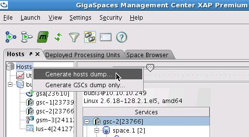
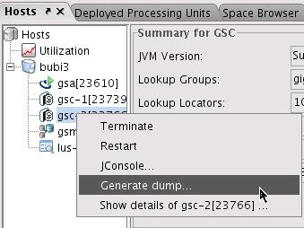
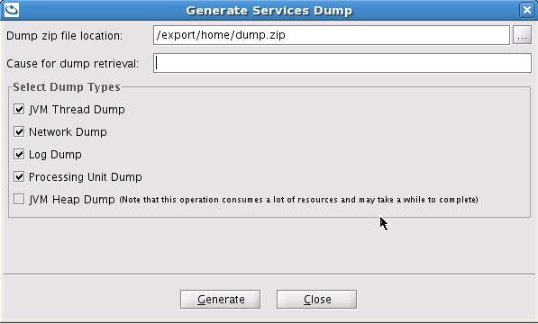

Section Summary: Simple API to generate dump files of the runtime GigaSpaces environment.
Overview
The dump feature of the Admin API allows to easily generate dump information out of GigaSpaces runtime environment. Here is an example:
Admin admin = new AdminFactory().addGroup("myGroup").createAdmin(); // wait a bit for components to be discovered (or use waitFor) ... DumpResult dumpResult = admin.dump("reason comes here", null, "summary", "thread", "log", "processingUnits"); dumpResult.download(new File("target/dump.zip", null);
The above example will go over all the currently discovered runtime elements in GigaSpaces (GSA, GSM, GSC, LUS) and generate a dump of them (stored locally to each runtime component). Then, the DumpResult can be used to download all the dump information, from all the different runtime components, into a file.
The above example generates dump that will include a simple "summary" information (JVM information and stats, for example), a thread dump, all the logs associated with the given runtime component, and all the processing unit instances running (applied to a GSC).
Dump Provider
Most of the elements within the Admin API implement the DumpProvider interface, allowing to generate dump information. This include discrete elements such as GridServiceContainer, or GridServiceManager, but also includes compound elements such as GridServiceManagers and even Admin. This means that quite easily, a dump for a one or more runtime components already grouped by the Admin API can be easily performed. Here are some examples:
Admin admin = new AdminFactory().addGroup("myGroup").createAdmin(); // wait a bit for components to be discovered (or use waitFor) ... // dump all the GSMs DumpResult dumpResult = admin.getGridServiceManagers().dump("reason comes here", null, "summary", "thread", "log", "processingUnits"); dumpResult.download(new File("target/gsms.zip", null); // dump all the GSCs dumpResult = admin.getGridServiceContainers().dump("reason comes here", null, "summary", "thread", "log", "processingUnits"); dumpResult.download(new File("target/gscs.zip", null); dumpResult = admin.getZones().getByName("zoneA").dump("reason comes here", null, "summary", "thread", "log", "processingUnits"); dumpResult.download(new File("target/zoneA.zip", null);
If the natural grouping provided by the admin API is not enough, then the CompoundDumpResult can be used in order to accumulate dump results. Here is an example:
CompoundDumpResult dumpResult = new CompoundDumpResult(); dumpResult.add(gridServiceContainer1.dump(...)); dumpResult.add(gridServiceManager2.dump(...)); dumpResult.add(gridServiceAgent3.dump(...)); dumpResult.download(new File("target/compound.zip", null);
Dump Processors
The dump process occurs in stages within the runtime component. Each stage is called a processor and the following is a list of all the different processors:
- summary: General summary information of the process.
- network: Information on the network layer of the process and the OS network stats.
- thread: Thread dump of the process.
- heap: Heap dump of the process. Note, this is a heavy operation and can produce very large dump files.
- log: Adds all the log files of the process to the dump file.
- processingUnits: Dump of all the processing units (applicable only for GSCs) information.
The log process is the only processor that takes into account the context (Map<String, Object>) that can be passed as part of the dump command. It tries to find under the logEntryMatcher key a LogEntryMatcher that will be used to filter out just relevant parts of the log files to be returned. If no matcher is provided, all the log files will be retuned. Here is an example of specifying a log entry matcher:
Map<String, Object> context = new HashMap<String, Object>(); context.put("logEntryMatcher", lastN(200)); DumpResult dumpResult = admin.generateDump("test", context, "summary", "log");
The above code will generate a dump, including the just the last 200 log entries which the log dump processor will process.
Dump UI
You may use the GigaSpaces Management Center to generate a dump file that includes information about the runtime GigaSpaces environment for a specific GSC or across the entire environment.
Start the GS-UI , move into the Hosts tab and select the relevant option:
Full environment dump:

Specific machine dump:

Specific GSC dump:

Any of the above will display the following dialog. Place the location of the dump file , select the desired options and click the Generate button.

| Make sure the user that started the GS-UI has write permissions to the location of the dump file. |
Dump File Structure
The dump file structure would look like this:
dump_file.zip
gsa-10.10.10.249-23610--1284928573201
network.txt
summary.txt
threads.txt
logs
2010-09-19~08.22-gigaspaces-gsa-10.10.10.249-23610.log
gsc-10.10.10.249-23739--1284928573169
network.txt
summary.txt
threads.txt
logs
2010-09-19~08.22-gigaspaces-gsc_1-10.10.10.249-23739.log
processing-units
space
1
pu.xml
spaces
space
summary.txt
gsc-10.10.10.249-23766--1284928573079
network.txt
summary.txt
threads.txt
logs
2010-09-19~08.22-gigaspaces-gsc_2-10.10.10.249-23766.log
processing-units
mirror
1
pu.xml
spaces
mirror
summary.txt
space
1_1
pu.xml
spaces
space
summary.txt
gsm-10.10.10.249-24112--1284928573193
network.txt
summary.txt
threads.txt
logs
2010-09-19~08.22-gigaspaces-gsm_3-10.10.10.249-24112.log
lus-10.10.10.249-24127--1284928573201
network.txt
summary.txt
threads.txt
logs
2010-09-19~08.22-gigaspaces-lus_4-10.10.10.249-24127.log